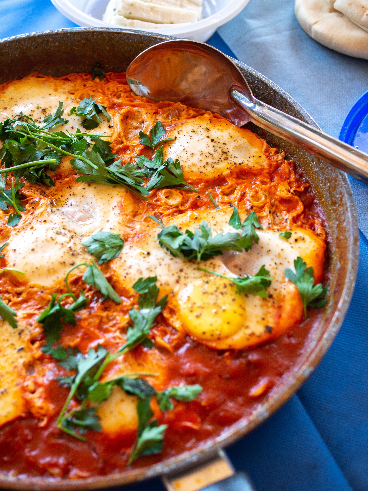

Shakshuka

Filling customizable meal that can be enjoyed at any point of the day, be it breakfast,
lunch, dinner, or a substantial snack!
A brunch staple that doesn't have to be limited to brunch only and can fuel your body with
all the healthy ingredients during any point of the day.
This recipe can be modified to the individual taste and dietary preferences by
swapping, adding or removing different vegetables.
Ingredients
- 2 tbsp olive oil
- 1 onion, diced
- 1 red bell pepper, seeded and diced
- 1 zucchini, diced
- 2 cloves of garlic, crushed
- 1 tsp sweet paprika
- 1/2 tsp smoked paprika
- 1/2 tsp cumin
- 1/4 tsp chili powder
- 400ml tomato puree
- 4 eggs
- 1/2 tsp salt
- parsley, chopped
Steps
- Preheat the pan and add oil to it. Wait until the oil gets hot
- Add chopped onion, garlic, zucchini and bell pepper; cook until the vegetables soften a bit;
stir continuously so the garlic doesn't burn
- Add the spices and salt
- Add tomato puree and reduce it a little
- Make four wells in the sauce and carefully crack eggs into them
- Cover the pan with a lid and wait until the eggs are cooked through
- Serve with chopped parsley on top